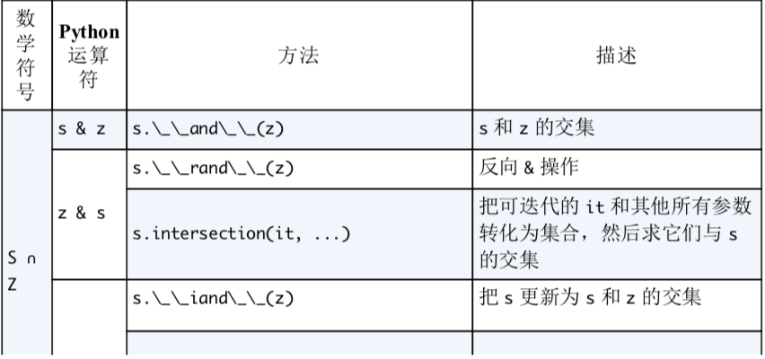
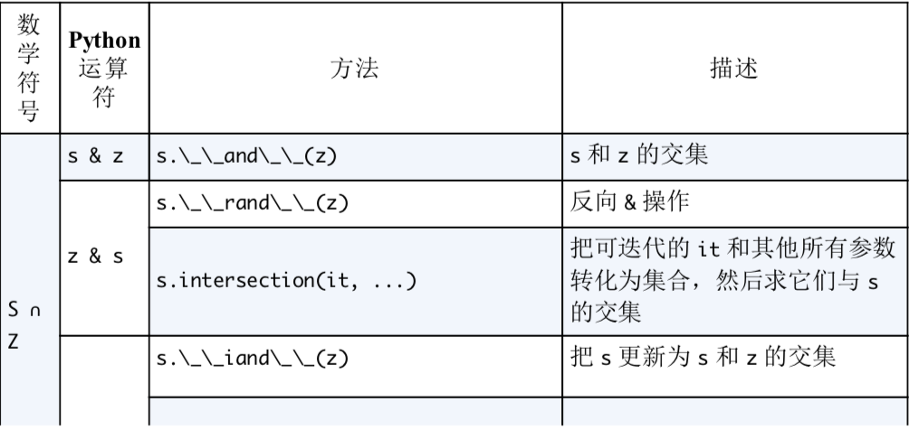
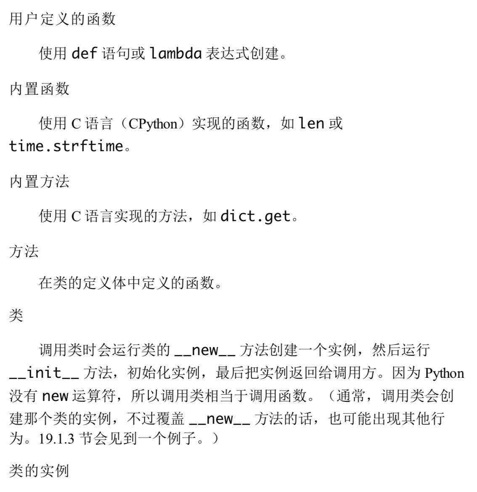
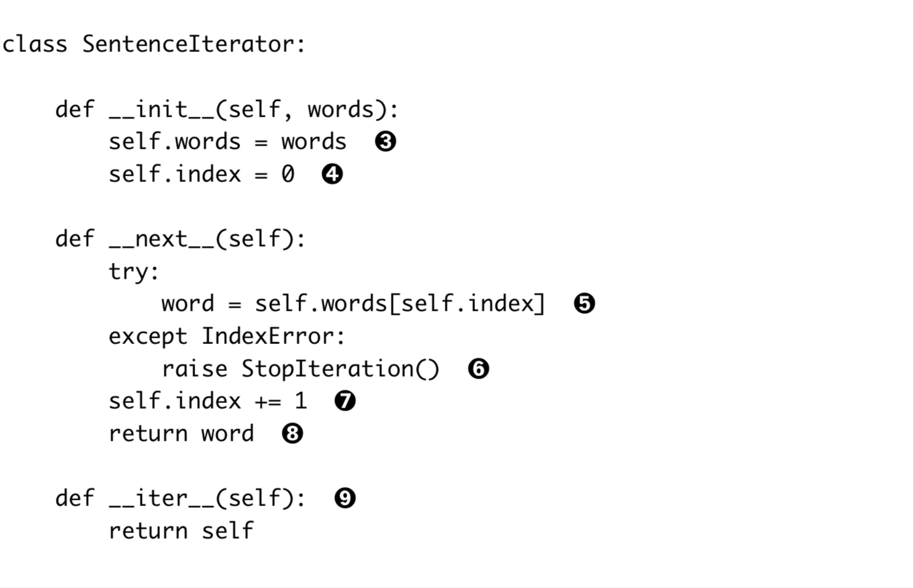
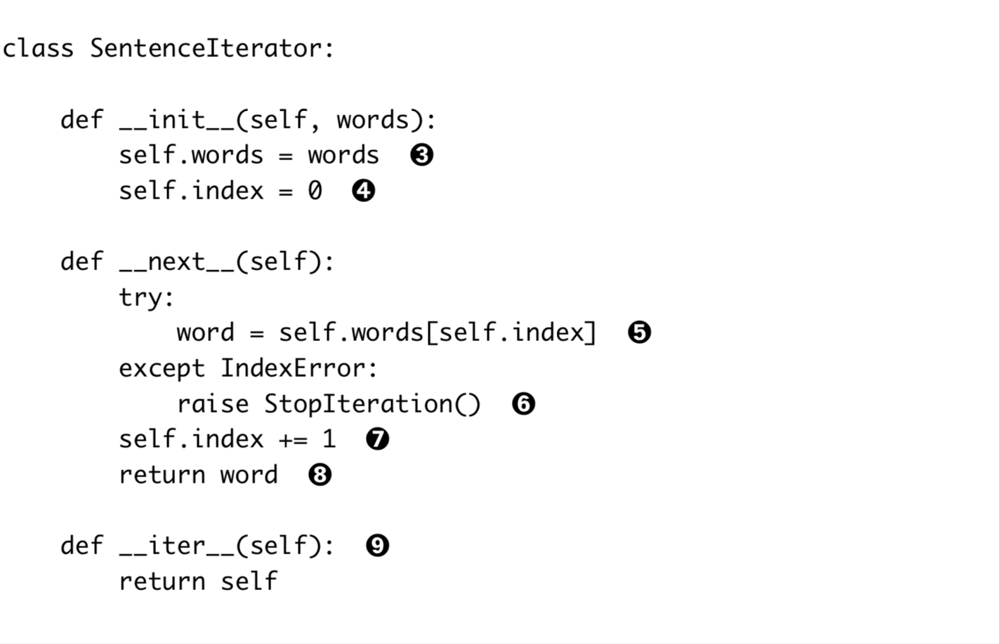

字典
##泛映射类型 Mapping 和 MutableMapping 这两个抽象基类，提供形式化接口 
什么是可散列数据？
- 原子不可变数据类型（str，bytes 和 number）
- 在生命周期类，散列值不变的类型。需要有_hash_ 和 _qe_ 方法
- 元组类型需要元组里每一个值都是可散列类型
1
2a = ("a","b",("c","d")) #->hashable
a = ("a","b",["c","d"]) #-> not hashable - 用户自定义的对象都是可散列的，因为散列值就是id()函数的值。如果自定义对象实现了__eq__方法，并且这个用到了这个对象的内部状态的话，内部状态必须不可变。
字典推导
可以从任何键值对作为作为元素的可迭代对象中推导 1
2
3data = [("zhang",23),["li",23],["ding",24],{"huang",24}]
data_dict = {name:age for name,age in data}
print(data_dict) #-> {'zhang': 23, 'li': 23, 'ding': 24, 24: 'huang'}
常用的映射方法
- d.clear()
- _contains_(k)
- d.copy() #潜赋值
- d._delitem_(k)
- d.get(k, default)
- d.items()
- d._iter_()
- d.keys()
- d._len_()
- d.pop(k)
- d.popitem()
- d._reversed_() #仅针对 OrdereDidic
- d.setdefault(k,[default]) #如果存在键k,将对应的值设置为default,然后返回.如果没有，d[k] = default.
- d._setitem_(k,v)
- d.values()
###setdefault 用法 1
2
3
4
5my_dict.setdefault(key,[]).append(value) #效率更高
if ket not in my_dict:
my_dict[key] = []
my_dict[key].append(new_value)
映射的弹性查询
defaultdict
1 | from collections import defaultdict |
list可调用对象存储在default_factory中，当a[k]，k不存在时，a._getitem_ 会调用 _miss_ 方法（只会在__getitem__里调用），然后利用default_factory生成返回值。
自己创建继承 dict 类型，然后充血__miss__方法
1 | class StrDict(dict): |
k in my_dict.keys() (.items(), .values())这种操作很快，因为返回的是视图，类似集合。
##字典的变种 - collections.OrderedDict 添加元素时会保持顺序，popitem默认返回最后一个元素，popitem(last=False)默认返回第一个元素 - collections.ChainMap 容纳多个不同的映射对象，在键查找时，会当做整体查找。
1 | import builtins |
- collections.Counter 给每个键会准备一个计数器
1
2
3
4
5
6
7
8
9
10
11from collections import Counter
a = Counter("aabbccdd")
print(a)
a.update("aacc")
print(a)
print(a.most_common(1))
#output
#Counter({'a': 2, 'b': 2, 'c': 2, 'd': 2})
#Counter({'a': 4, 'c': 4, 'b': 2, 'd': 2})
#[('a', 4)]
##子类化 UserDict 含有data属性，是dict实例，是存储数据的地方. 1
2
3
4
5
6
7
8
9
10
11
12
13
14
15
16
17
18
19
20
21
22
23
24class StrDict(dict):
def __missing__(self, key):
if isinstance(key, str):
return KeyError(key)
else:
return self[str(key)]
def get(self, key, default=None):
try:
return self[key]
except keyError:
return default
def __setitem__(self, key,item):
self.data[str(key)] = item
def __contains__(self, key):
return str(key) in self.data
if __name__ == '__main__':
a = StrDict({"1": 2})
print(a[1])
不可变的映射类型
MappingProxyType 返回动态内存视图，不能靠视图改变原对象，但是原对象的更改可以由视图表现出来
1 | from types import MappingProxyType |
集合论
- set 对象中的元素必须是可散列的，但是 set 对象本身是不可散列的，frozenset是可散列的对象。
- 合集
- - 差集
- & 交集
- 创建空集合要用set(), 如果用{}则是创建空字典
- 集合推导
1
{char(i) for i range(100)}
集合的运算
 
###集合的比较运算  
##dict set list效率比较 查找元素，dict 和 set 有强大的散列表做支撑，速度非常快
##散列表原理 my_dict[key], 现根据 hash(key)， 根据最低几位去散列表里查找表元。如为空，返回 error；若有表元，则表元中存在 foundkey:foundvalue. 若 foundkey == key, 返回 foundvalue。若不等，取 hash(key)的高几位再去找。循环。 
##dict conclusion - 键必须是可散列的 一个可散列的对象必须满足 - _hash_()方法返回的值不变 - _eq_()可做相等判断 - a == b， 则 hash(a) == hash(b) - 字典内存开销巨大 字典使用散列表，散列表是稀疏的。 - 键查询很快 空间换时间 - 添加新键可能会改变已有的顺序
set conclusion
- 集合元素必须是可散列的 一个可散列的对象必须满足
- _hash_()方法返回的值不变
- _eq_()可做相等判断
- a == b， 则 hash(a) == hash(b)
- 集合内存开销巨大 字典使用散列表，散列表是稀疏的。
- 高效判断是否包含 空间换时间
- 添加新元素可能会改变已有的顺序
序列模型
分类
- 容器序列 list, tuple, collections.deque 等，存放对象的引用
- 扁平序列 str, bytes, bytearray, memoryview, array.array 实际是一段连续的内存空间
或者
- 可变序列 list, bytearray, array.array, collection.deque, memeoryview
- 不可变序列 tuple, str, bytes.

##列表推倒与生成器
列表推倒
- 不存在变量泄露的问题
- 可对元素过滤和加工 类似 map/filter 的功能
- 可计算笛卡尔积 ### 生成器表达式
1
2
3
4
5
6
7
8s = 'a'
symbols = "abcde"
beyond_ascii = [ord(s) for s in symbols if ord(s) > 10]
print(s) # s = 'a'
colors = ['b','w']
sizes = ['S','M','L']
tshirts = [(color,size) for color in colors for size in sizes] - 跟列表推倒差不多，把方括号换成圆括号
- 生成器表达式遵守迭代器协议，可以逐个产出元素，节省内存 生成器表达式逐个产出元素，内存中不会一次性产出6个 tshirt 的列表
1
2
3
4colors = ['b','w']
sizes = ['S','M','L']
for tshirt in ((color,size) for color in colors for size in sizes):
print(tshirt)
元组
元组与记录
元组其实是没有字段名的记录，元组中的每个元素都存放了记录中一个字段的数据 1
city,year,pop,cha,area = ('Tokyo',2003,32450,0.66,8014)
- 元组拆包可以运用到任何可迭代的对象上，唯一的要求是可迭代对象的元素数量必须与接收这些元素的变量数量一致。
- 可用*来表示忽略多余的元组
1 | a,b,*rest = range(5) |
- *运算可以把可迭代对象拆开作为函数的参数
1 | divmod(20,8) #->(2,4) |
嵌套拆包
1 | metro_areas = [('Tokyo','JP',36.933,(35.689,139.691)),('Beijing','CH',36.933,(35.689,139.691))] |
具名元组
collections.namedtuple 是一个工厂函数,可以用来创建一个带字段名的元组和一个有名字的类,该类的实例所消耗的内存和元组是一样的,因为字段名都被存在对应的类里面。比普通的类消耗的内存要小. - 具名元组具有专有的属性和方法，如_fields类属性，类方法_make(iterable),实例方法_asdict(). 1
2
3
4
5
6from collections import namedtuple
Person = namedtuple('P',['name','sex'])
print(Person._fields)
iterable = ("zhangruochi","male")
me = Person._make(iterable)
print(me._asdict())
作为不可变列表的元组
元组除了没有列表元素的增减方法，支持列表的其他所有方法 

切片
切片忽略最后一个元素的好处 - 最后一个元素时, 只有通过最后一个元素直接看出切片区间里有几个元素 - 起始和结束元素都可见时， stop - start 快速计算出区间元素的个数 - 通过一个元素直接把列表分成两段a[:x],a[x:]
对象切片
seq[start:stop:step] -> seq._getitem_(slice(start,stop,end)) 因此可以自定义切片对象: 1
2
3my_slice = slice(1,2)
seq = range(10)
sub_seq = seq[my_slice]
多维切片
内置的序列类型只支持一维的索引，外部库 numpy 之类的可以支持二维索引 1
2a[i,j]
a[:,i:j]
切片赋值
把切片放在负值语句的左边，就可以对切片进行操作 1
2
3l = list(range(10))
l[2:5] = [20,30]
del l[5:7]
对序列对象使用+和*
+和*都遵守不修改原对象，而构建新对象的规律 注意：
用[[]]*3来初始化由列表组成的列表，但是列表里其实包含的是3个对同意对象的引用 1
2
3
4
5
6
7
8a = [["_"]*3]*3
a[1][2] = "x"
print(a) #-> [['_', '_', 'x'], ['_', '_', 'x'], ['_', '_', 'x']]
#正确写法
a = [["_"]*3 for i in range(3)]
a[1][2] = "x"
print(a) #-> [['_', '_', '_'], ['_', '_', 'x'], ['_', '_', '_']]
序列的增量赋值
+= 背后的特殊方法是_iadd_(就地加发)， 但是如果这个类没有实现__iadd__时，Python解释器会退而使用_add_ - 对于可变序列a, a+=b 等同于 a.extend(b) - 对于不可变序列a, a+=b 等同于 a = a+b
对不可变对象进行重复拼接操作会导致效率低下，因为每次都有新对象生成，还要复制元素到新对象
一个 += 的谜题 1
2t = ("a","b",["c"])
t[2] += ["d"]
 教训： - 不要把可变对象放在不可变对象里面 - 增量赋值不是原子操作
教训： - 不要把可变对象放在不可变对象里面 - 增量赋值不是原子操作
序列对象的排序
就地排序和负值排序
- list.sort()就地排序
- sorted(list) 会赋值一份新的序列对像
- Python排序算法Timsort的时间复杂度为nlog(n)
参数
- reverse, 如设定为True, 被排序的对象会以降序输出
- key, 以函数为参数，这个函数会应用在每个元素上
1
sorted(list,key = len, reverse = True)
利用bisect 管理已排序的序列
- bisect 利用二分查找插入元素的位置
- insort 利用 bisect 查找位置然后插入元素
1 | from bisect import * |
list的可替换对象
array.array
Python数组跟 C 语言数组一样精简, 如果我们需要一个只包含数字的列表,用 array.array会比list 效率更高，且array支持所有可变序列的操作.
- array.array需要类型码作为参数来表示底层的 C 语言需要存放怎样的数据. 如'b'表示有符号的字符.
- 数组还提供更多的读取文件和存入文件的方法
1
2
3
4
5from array import array
from random import random
floats = array('d',(random() for i in range(10**7)))
print(floats[-1])
floats.tofile("floats.bin","wb") - pickle.dump 也可以快速序列化数字类型，速度与 array.tofile()几乎一样快, pickle 还支持其他的数据类型
- 但是从Python3.4开始, 数组不再支持就地排序, 如果排序需要新建数组 a = array(a.typecode,sorted(array))
内存视图
memoryview 能够让你在不复制内存的条件下,在数据结构之间共享内存 1
2
3
4
5
6
7
8
9
10
11
12
13
14
15
16
17
18
19
20
21
22
23
24
25
26
27import time
for n in (100000, 200000, 300000, 400000):
data = 'x'*n
start = time.time()
b = data
while b:
b = b[1:]
print 'bytes', n, time.time()-start
for n in (100000, 200000, 300000, 400000):
data = 'x'*n
start = time.time()
b = memoryview(data)
while b:
b = b[1:]
print 'memoryview', n, time.time()-start
"""output
bytes 100000 0.240149021149
bytes 200000 1.04921603203
bytes 300000 2.66688489914
bytes 400000 4.83206987381
memoryview 100000 0.011647939682
memoryview 200000 0.0258820056915
memoryview 300000 0.0385529994965
memoryview 400000 0.0550448894501
"""
memoryview.cast 可以利用不同的方式读写同一块内存
1 | import array |
计算机存储的大端法和小端法 > 在计算机内存中，通常是以字节（Byte），也就是 8 个位（Bit）为基本存储单元（也有以 16 位为基本存储单元的）。对于跨越多个字节的数据类型（比如 int 长 4 个字节），如何在内存中对这些字节进行排序有两种常见的方法：大端法（Big-endian）和小端法（Little-endian）。
不管是大端法还是小端法存储，计算机在内存中存放数据的顺序都是从低地址到高地址，所不同的是首先取低字节的数据存放在低地址还是取高字节数据存放在低地址。
- 若首先取高字节的数据存放在低地址，则是大端法；
- 若首先取低字节的数据存放在低地址，则是小端法。
双向队列和其他形式的队列
collections.deque
利用 append 和 pop(0) 的方法, 我们可以把 list 当做 stack 来使用. 但是 pop(0) 的时间复杂度为n，效率低下.
collections.deque类是一个线程安全，可以快速从两段添加或者删除元素的数据类型.
对stackd的模拟 1
2
3
4
5
6
7
8
9from collections import deque
array = deque(range(10),maxlen = 10)
array.rotate(3)
print(array) #-> deque([7, 8, 9, 0, 1, 2, 3, 4, 5, 6], maxlen=10)
array.append(-1) #-> deque([8, 9, 0, 1, 2, 3, 4, 5, 6, -1], maxlen=10)
print(array)
array.popleft() #-> deque([9, 0, 1, 2, 3, 4, 5, 6, -1], maxlen=10)
print(array)
queue
提供了同步(线程安全)类 Queue, LifoQueue 和 PriorityQueue, 不同线程可以利用这些数据来交换信息。具有 maxsize参数，超出容量时queue会被锁住.
heapq
让用户可以把可变序列当做堆队列或者优先队列使用.
函数
一等对象
编程语言里一等对象的定义: 1. 运行时创建 2. 能赋值给变量或数据结构中的元素 3. 能作为参数传递 4. 能作为函数返回值
1 | def factorial(n): |
高阶函数
介绍函数为参数，或者把函数作为返回结果的函数就是高阶函数
1 | fruits = ["apple","pear","cherry","fig"] |
map,filter,reduce 极其替代品
列表推导式比map与filter连用更清晰易懂
1
2print(list(map(fact,filter(lambda x : x%2, range(6))))) # -> [1, 6, 120]
print([fact(i) for i in range(6) if i % 2]) # -> [1, 6, 120]sum 比 reduce(add,[]) 更易懂
any,all也是内置的规约函数
1
2print(all([True,True,False])) # -> False
print(any([True,False,True])) # -> True
lambda 表达式
在 Python内创建匿名函数 1
2fruits = ["apple","pear","cherry","fig"]
print(sorted(fruits,key = lambda word: word[::-1]))
七种可调用对象
 
自定义可调用对象
1 | import random |
函数内省
函数有而自定义对象没有的属性
['annotations', 'call', 'closure', 'code', 'defaults', 'get', 'globals', 'kwdefaults', 'name', 'qualname']
1 | class C: |


参数传递
1 | def parameters(name,*content, cls = "first_name", **attr): |
函数式编程
- operator 模块 和 functools 模块
- reduce
- itemgetter 从序列或者对象中读取元素或者属性
- methodcaller 自行函数，然后再调用对象上使用参数指定的方法(可以冻结参数)
1
2
3
4from operator import methodcaller
split_and_replace = methodcaller('replace',' ','_')
name = "ZHAN RUO CHI"
print(split_and_replace(name)) # -> ZHAN_RUO_CHI - partial 创建一个新的可调用对象，冻结原有对象的某些参数
1
2
3
4from operator import mul
from functools import partial
triple = partial(mul,3)
print(triple(7)) #-> 21
数据模型
python 解释器在碰到特殊的句法时，会使用特殊方法去激活一些基本的对象操作。例如 len(x) 在调用时，如果 x 是内置对象，速度回非常快，因为 CPthon 会直接从一个 C 结构体里读取对象的长度。如果 x 不是内置对象，len(x) 会读取对象内部的__len__方法。这种处理方法在保持内置类型的效率和语言一致性之间找到平衡点。
不能让特例特殊到开始破快既定规则 --zon of python
1 | import collections |
两个好处 - 类的用户不用再去记标准操作的名称 - 更加方便的利用 python 标准库
1 | from math import hypot |
_reper_ 反对对象的字符串表示，__str__只有在调用 str()或者print()时才会调用，_repr_ 是更好的选择，因为如果一个对象没有__str__函数，python 又需要调用它时，解释器会调用 _repr_ 作为替代.
任何对象都可以用于需要布尔值的上下文中，为了判定一个值 x 的真假，Python 会调用bool(x), 其背后是调用 x._bool_()的结果;如果不存在该方法，那么 bool(x)会尝试调用 x._len_()。 若返回0，则 bool 会返回 False，否则返回 True。
1 | if([]) #False |
文本和字节序列
字符的问题
Python3中，str 对象中获取的元素是 unicode 字符 unicode 标准把字符做了如下区分 - 字符的标识，在 unicode 标准中以4~6个十六进制的数字，然后加前缀 U+. 如A的码位是U+0041 - 字符的具体表述取决于所用的编码. - 编码是在码位与字节序列之间的转换. 如 A 在 UTF8中编码成单个字节
二进制序列类型
分为不可变 bytes 类型和 bytearray 类型 - bytes对象可以从str 对象使用给定的编码构建 1
cafe = bytes('cafe',encoding="utf8")
1 | import array |
##编码中遇到的问题 1
2
3
4
5my_str = "Português"
print(my_str.encode("utf8"))
# print(my_str.encode("ascii")) #-> 报错
print(my_str.encode("ascii",errors='ignore')) #-> b'Portugus'
print(my_str.encode("ascii",errors='replace')) #-> b'Portugu?s'
##处理文本文件 ### 最佳方式，unicode 三明治 - 尽早把输入(比如读取文件时)的字节序列转化为字符串 - 只操作字符串 - 尽量晚地把字符串转化为字节序列 
1 | my_str = "Português" |
##为了正确比较而规范化字符串 unicode有组合字符(变音符号和附加到前一个字符上的记号，打印时作为一个整体),所以字符串比较起来很复杂。 1
2
3
4
5
6
7
8#已解决该问题？
my_str1 = "Portugués"
my_str2 = "Portugue\u0301s"
print(my_str1)
print(my_str2)
print(my_str1 == my_str2) #-> True
print(len(my_str1) == len(my_str2)) #-> True1
2
3
4
5from unicodedata import normalize
from unicodedata import combining
my_str = "Portugués"
new_str = "".join(c for c in normalize("NFD",my_str) if not combining(c))
print(new_str)
生成器与迭代器
可迭代的原因
- 实现了__iter__函数
- 内置的 iter 函数有以下作用
- 检查对象是否实现__iter__函数，如果实现，返回迭代器
- 没有实现可迭代对象，如果现实__getitem__方法，python 返回一个迭代器，尝试从索引0开始迭代
- 尝试失败，跑出 TypeError 异常
1
2
3
4
5
6
7
8
9
10
11
12
13s = "zhangruochi"
for chr in s:
print(chr)
print("-------")
it = iter(s)
while True:
try:
print(next(it))
except:
del it
break
迭代器与可迭代对象之间的关系
- 可迭代对象实现__iter__方法，返回一个迭代器实例
- 迭代器实现_iter_ 方法，返回自己，为了通过 issubclass(iterator,abc.Iterator) 测试
- 迭代器还要实现__next__方法，每次返回一个元素
- 可迭代对象一定不能是自身的迭代器，也就是不能包含_next_ 方法
 

生成器函数
1 | import re |
- 生成器对象也是迭代器，利用iter方法返回一个生成器对象，可以不用再单独定义迭代器
- 包含yield关键词的函数是生成器函数，调用生成器函数时，会返回一个生成器对象，也就是说，生成器函数是生成器工厂
- 把生成器传递给 next()函数时，生成器会向前运行，遇到 yield 关键词会停止并返回产出的值
静态类和静态方法
example
1 | class Date(object): |
class method
我们在一个方法中实现了功能，因此它是可重用的。 这里的封装处理的不错（如果你发现还可以在代码的任意地方添加一个不属于 Date 的函数来实现类似的功能，那很显然上面的办法更符合 OOP 规范）。 cls 是一个保存了 class 的对象（所有的一切都是对象）。 更妙的是， Date 类的衍生类都会具有 from_string 这个有用的方法。
static method
从静态方法的使用中可以看出，我们不会访问到 class 本身 – 它基本上只是一个函数，在语法上就像一个方法一样，但是没有访问对象和它的内部（字段和其他方法），相反 classmethod 会访问 cls， instancemethod 会访问 self。